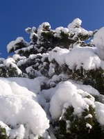
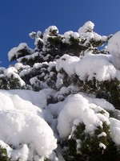

Next Photo
-
Vote
Kyle
Marking my official foray into portraiture, I give you Kyle. This was my first finished senior photo, and I like it a lot.
We went out and took photos in quite a few places, by the time we arrived at the train tracks the sky was overcast. That overcast sky softened his face, adding to the beauty of the photo, and some of the light was bouncing off the white gravel and into his eyes, lighting them up a bit. I must say, I love my 85mm prime, that thing is sharp and a great lens. Great for portraits.
I like the photo for a couple reasons, its sharpness around the eyes is one of them. Also, there are two ways to look at the photo. If you glance at it the train tracks are a prominent part of the image, but if you concentrate on the image they seem to fall away, leaving only Kyle. I love it.
More...
Title: Kyle
Description: Marking my official foray into portraiture, I give you Kyle. This was my first finished senior photo, and I like it a lot.
We went out and took photos in quite a few places, by the time we arrived at the train tracks the sky was overcast. That overcast sky softened his face, adding to the beauty of the photo, and some of the light was bouncing off the white gravel and into his eyes, lighting them up a bit. I must say, I love my 85mm prime, that thing is sharp and a great lens. Great for portraits.
I like the photo for a couple reasons, its sharpness around the eyes is one of them. Also, there are two ways to look at the photo. If you glance at it the train tracks are a prominent part of the image, but if you concentrate on the image they seem to fall away, leaving only Kyle. I love it.
Keywords: kyle brosyon senior portrait
Hidden: n
Date added: Fri Dec 07 13:17:12 CST 2007
Date taken: Sun Nov 25 04:43:16 CST 2007
Camera: Canon EOS DIGITAL REBEL XT.
Resolution: 2304x3456
Mode: 0
Shutter speed: 7643856/1000000
Flash: 16
Exposure time: 1/200
Iso: 200
Metering: 6
Aperture: 2970854/1000000
Focal length: 85/1
Artist: NathanielGuy Mahieu
Copyright: 2007 NathanielGuy Mahieu
Views: 324
 
